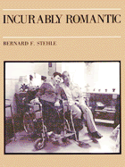

Combining dialogue with photographs of couples at a private, total care institution, Stehle portrays love relationships among the severely disabled
Combining dialogue with photographs of couples at a private, total care institution, Stehle portrays love relationships among the severely disabled


 Combining dialogue with photographs of couples at a private, total care institution, Stehle portrays love relationships among the severely disabled
Combining dialogue with photographs of couples at a private, total care institution, Stehle portrays love relationships among the severely disabled

|  |
Incurably RomanticBernard F. Stehle, afterword by Joseph Schneidercloth EAN: 978-0-87722-307-8 (ISBN: 0-87722-307-6) |
Philadelphia Book Clinic Certificate of Award, 1986
The people we meet in Bernard Stehle's Incurably Romantic are physically disabled, some severely. Their conditions range from cerebral palsy, muscular dystrophy, multiple sclerosis to multiple disabilities, yet they are still lovers and are loved. They speak to us of affection, intimacy, sadness, need, joy, and hope.
Our culture places a high premium on how people look: those considered "beautiful" or "handsome" become our personal models or Ideals; those considered "unattractive" and physically "abnormal" become, by extension, less personally worthy. Such meanings even contribute to our sense that love—being a lover and loved—is incongruous with physical (and surely mental) disabilities.
Combining dialogue with photographs of couples at a private, total care institution in Philadelphia, known formerly as The Philadelphia Home for Incurables, Stehle portrays love relationships among the severely disabled. Most important, he does not attempt to deny their obvious physical handicaps nor to emphasize them. Their disabilities are part of what is given about their presence in the photographs.
As an Introduction, Stehle describes how he spent the past four years taking photographs and tape recorded statements. The Afterword, written by Joseph Schneider, a noted medical sociologist, anticipates some of the questions and reactions raised by the viewers of this book, and uses them as a bridge to understand the experiences of the people in it.
Incurably Romantic is a powerful statement about the needs and abilities of the so-called "disabled" among us. It challenges our complacency regarding the plight of people who live and love in a society which ignores their feelings, needs, and abilities. Most of all, this book shows them as people no more locked in their physicality than the rest of us.
Bernard F. Stehle teaches in the English Department and the Department of Photography at the Community College of Philadelphia.
Art and Photography
Disability Studies
© 2015 Temple University. All Rights Reserved. This page: http://www.temple.edu/tempress/titles/338_reg.html.